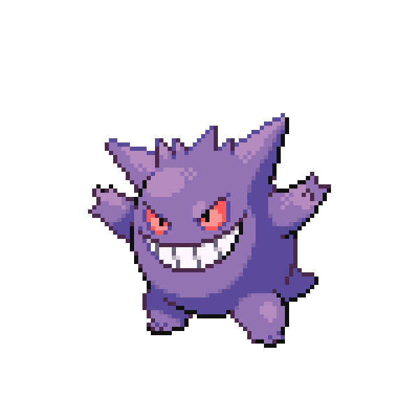
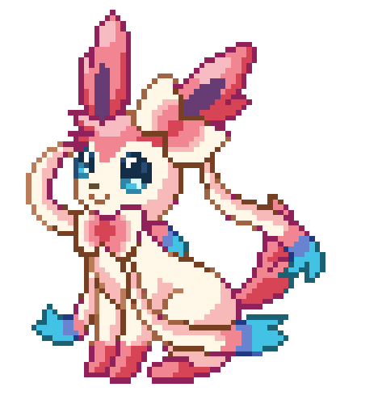

-
Bulbasaur #001

- Grama
- Veneno
Há uma semente de planta em suas costas desde o dia em que este Pókemon nasceu. A semente cresce lentamente.
-
Ivysaur #002

- Grama
- Veneno
Quando o bulbo em suas costas cresce, parece perder a capacidade de ficar em pé em suas patas traseiras.
-
Venusaur #003

- Grama
- Veneno
Sua planta floresce quando está absorvendo energia solar. Ele permanece em movimento para buscar a luz solar
-
Charmander #004

- Fogo
Tem preferência por coisas quentes. Quando chove, diz-se que o vapor jorra da ponta de sua cauda
-
Charmeleon #005

- Fogo
Tem uma natureza bárbara. Na batalha, ele chicoteia sua cauda ardente e corta com garras afiadas.
-
Charizard #006

- Fogo
Ele cospe fogo que é quente o suficiente para derreter pedregulhos. Pode causar incêndios florestais soprando chamas.
-
Squirtle #007

- Água
Quando ele retrai seu longo pescoço em sua concha, ele esguicha água com força vigorosa.
-
Wartortle #008

- Água
É reconhecido como um símbolo de longevidade. Se sua concha tem algas, esse Wartortle é muito antigo.
-
Blastoise #009

- Água
Ele esmaga seu inimigo sob seu corpo pesado para causar desmaios. Em uma pitada, ele se retirará dentro de sua concha.
-
Pikachu #010

- Elétrico
Quando está com raiva, descarrega imediatamente a energia armazenada nas bolsas de suas bochechas.
-
Raichu #011

- Elétrico
Sua cauda descarrega eletricidade no chão, protegendo-o de choques.
-
Clefairy #012

- Fada
Dizem que a felicidade virá para aqueles que virem uma reunião de Clefairy dançando sob a lua cheia.
-
Clefabe #013

- Fada
Um tímido Pokémon fada que raramente é visto, ele corre e se esconde no momento em que detecta as pessoas.
-
Gastly #014

- Fantasma
- Veneno
Ele envolve seu oponente em seu corpo gasoso, enfraquecendo lentamente sua presa ao envenená-la através da pele.
-
Haunter #015

- Fantasma
- Veneno
Ele gosta de ficar espreitando no escuro e tocar ombros com uma mão gasosa. Seu toque causa tremores intermináveis.
-
Gengar #016
- Fantasma
- Veneno
Gengar é um pokémon fantasma roxo e preto, com poderes paranormais que o permitem assustar seus oponentes e se mover rapidamente.
-
Eevee #017

- Normal
Sua capacidade de evoluir em muitas formas permite que ela se adapte suave e perfeitamente a qualquer ambiente.
-
Vaporeon #018

- Água
Vive perto da água. Sua longa cauda é marcada por uma barbatana, que muitas vezes é confundida com a de uma sereia.
-
Jolteon #019

- Életrico
Ele concentra as fracas cargas elétricas emitidas por suas células e lança raios perversos.
-
Flareon #020

- Fogo
O ar inalado é levado ao seu saco de chamas, aquecido e exalado como fogo que atinge mais de 3.000 graus Fahrenheit.
-
Espeon #021

- Psíquico
A ponta de sua cauda bifurcada treme quando está prevendo o próximo movimento de seu oponente.
-
Umbreon #022

- Noturno
Quando exposto à aura da lua, os anéis em seu corpo brilham levemente e ele ganha um poder misterioso.
-
Leafeon #023

- Grma
Quando você vir Leafeon dormindo em um pedaço de sol, saberá que ele está usando a fotossíntese para produzir ar limpo.
-
Glaceon #024

- Gelo
Ele pode controlar sua temperatura corporal à vontade. Isso permite que ela congele a umidade da atmosfera, criando rajadas de pó de diamante.
-
Sylveon #025
- Fada
Este Pokémon usa seus sensores em forma de fita para enviar uma aura calmante para seus oponentes, apagando sua hostilidade.
-
Mew #027

- Psíquico
Quando visto através de um microscópio, o cabelo curto, fino e delicado deste Pokémon pode ser visto.
-
Mewto #028

- Psíquico
Seu DNA é quase o mesmo de Mew. No entanto, seu tamanho e disposição são muito diferentes.